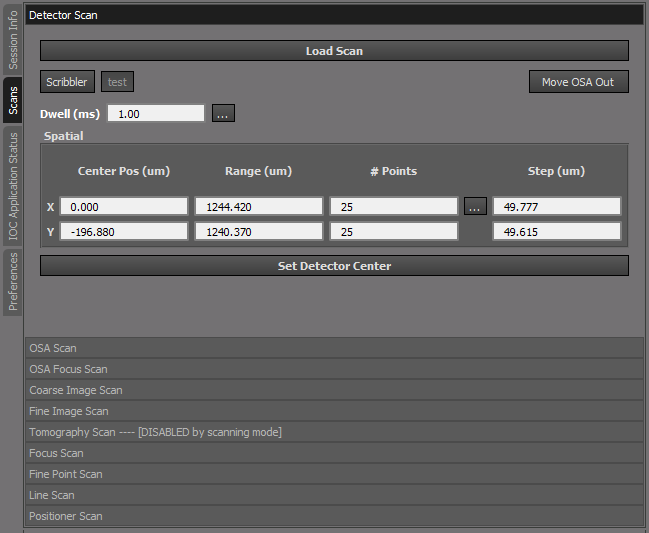

Scan Plugins
The Scans tab contains the results of what the system found in the scan_plugins sub directory of cls.applications.pystxm. The display order (from top to bottom) of the scans is determined in code by an ID number so that when loaded the order from top to bottom can be controlled. In this case the order of the scans is designed to go from Alignment type scans to Data collection and Data Collection refinement scans. Each scan has some combination of center and range along with dwell time in order to conduct the scan in the desired manner, some scans have extra features/buttons to make the scan more convenient.
Functions common to all scans is the ability to reload a previous scan with the Load Scan button as well if the user right clicks the mouse they will get a sub menu that will allow them to load or save other options if that scan allows them, some menu options will be disabled because they have no meaning for that particular scan.


{kind=link}
Note
As well, the graphical tools for selecting the scan region are located on the Image tab of the data visualization pane, the selection tools are dynamically enabled or disabled depending on the currently selected scan.

Scan Selection Tools
How to do ROI Selections for scans
All possible scans are located on the Scans tab. The order in which they appear is from top: scans relating to alignment to bottom: scans relating to data collection and data refinement.
Note
Scan Modes
When the scan tab bar contains the follwing statement [DISABLED by scanning mode] that means that this particular scan is not supported in the current scanning mode which is one of the 3 following scanning modes:
- 1 - COARSE SAMPLEFINE
The sample is positioned by the Coarse XY stages and the SampleFine XY piezo stages mounted on the coarse stage. Raster scanning for fine scans is done my scanning the SampleFine XY piezo stages.
- 2 - COARSE ZONEPLATE
The sample is positioned by the Coarse XY stages and the scanning is done by raster scanning the Zoneplate XY piezo stages.
- 3 - GONI ZONEPLATE
The sample is positioned by the Goniometer XYZ stages and the scanning is done by raster scanning the Zoneplate XY piezo stages.